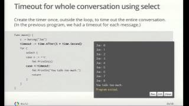
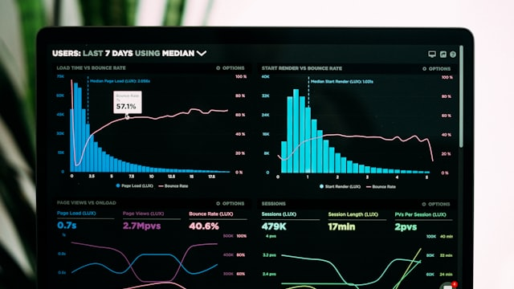
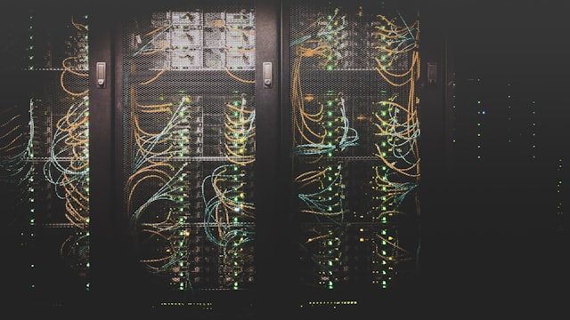
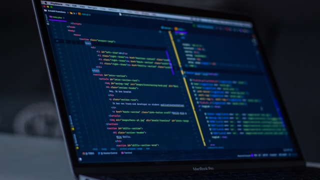

Round 2: where I’d go further, and what round one left out.
Round one got the big rules right — one navigation, quiet chrome, a fixed type scale, an honest
status bar. I agree with all of it, so this page doesn’t repeat it. It covers the rest: where I’d
go further than round one, the one thing its Queue plan is missing, and the parts of the app it
never mentions — keyboard shortcuts, picking a mode, failed downloads, the list at forty jobs,
playlist details, and two small things that quietly ruin dark interfaces: text that’s too dim,
and motion that’s too much.
Round one has since grown to twelve proposals and settled Home’s layout (its #12 is right, and I’ve stopped
arguing). Sections 9, 10, and 11 below are follow-ups in its own style — the points that sit on the seam
between its Home answer and my Queue answer, and the one thing it never designed: the transition itself.
The box after them lists what is still genuinely undecided.
Same format as round one. Each pair shows the same screen twice: left is what exists today or what
round one proposed, right is my version. The numbered markers sit on the screen itself.
Path: /proposals_glm.html · round 1 at /proposals.html · prototype at /
1. Glow means keyboard focus. Nothing else — not even the live job.
Round one keeps the glow in two places: keyboard focus, and the one job that is downloading.
Half right. A moving progress bar already tells you the job is live — a glow on top says the same
thing twice. And once “active things may glow” is allowed, every future state — queued, throttled,
merging, retrying — will want its own light until the rule is gone. One rule that always works:
a ring means keyboard focus, movement means activity, solid blue means the main action.
Round one’s proposal
1
Queue
Queue

Go Concurrency in Practice
Merging 88%
8/24
Go Distributed Systems Masterclass
#9 tracing · queued in collection
~/Movies/VidStow12.1 MB/s · 2 slots
1The glow and the moving bar say the same thing. The bar does the work; the light is just decoration.
Mine
1
2
Queue
Queue
Go Concurrency in Practice
Merging 88%
8/24
Go Distributed Systems Masterclass
#9 tracing · queued in collection
~/Movies/VidStow12.1 MB/s · 2 slots
1The live job is the quietest row on the screen. The bar is the signal — it’s the only thing moving.
2This ring is keyboard focus — the only glow in the whole app. Arrow keys move it, Enter acts on it.
3Queued and paused rows need no light. Their place in the list and their label say enough.
2. Finished files leave Queue. The app should still say it happened.
I agree with round one: once a file is on disk, it leaves Queue. But taken as-is, the row you watched
crawl from 12% to 88% to done simply disappears — and nothing tells you it finished. That’s a letdown
after a forty-minute wait. The fix is small: one toast and one badge. The toast is the payoff —
Open, Reveal, dismiss. The badge is the record — Downloads counts the file, so you can still find it
an hour later.
Eviction, taken literally
1
Queue
Queue
?
Go Concurrency in Practice
was merging at 88% a second ago
8/24
Go Distributed Systems Masterclass
#9 tracing · 6.2 MB/s
~/Movies/VidStow6.2 MB/s · 1 slot
1The download you waited forty minutes for just left the screen. No toast, no badge, no sound. The app goes silent at the exact moment it should speak up.
Eviction, with the payoff designed
1
2
Queue
Queue
8/24
Go Distributed Systems Masterclass
#9 tracing · 6.2 MB/s
Go Concurrency in PracticeFinished · ~/Movies/VidStow
OpenRevealDismiss
~/Movies/VidStow6.2 MB/s · 1 slot
1The completion toast: Open is the main button, Reveal opens Finder, and it goes away by itself after about six seconds. This is the payoff for the whole wait.
2The Downloads badge goes up the moment the file lands. The toast is the moment; Downloads is the record.
3The Queue count drops to what still needs the machine. The number means the same thing in both places now.
3. When the pills go, the keyboard needs a home.
Round one removes the ⌘-pills and says shortcuts “live in the menu bar, in tooltips, and in the user’s
hands.” That one sentence has to carry the whole keyboard story — so build it instead of waving at it.
A desktop tool feels like a workstation because of the keyboard, not because of what’s painted on screen.
Concretely: every nav item shows its shortcut in a tooltip, the native menu bar holds the full list,
and ⌘L jumps to the URL bar — the same key browsers use, so nobody has to learn it.
Current: shortcuts as a billboard
1
Home
⌘1 Home⌘2 Queue⌘3 Downloads
Paste a YouTube URL Analyze
Or drop links here
~/Movies/VidStowIdle
1Always visible, rarely needed. And it competes with Analyze on the one screen where Analyze is the point.
Mine: shortcuts where hands already are
1
2
Home
Home ⌘1
Paste a YouTube URL ⌘LAnalyze
Or drop links here
~/Movies/VidStowIdle
1Hover a nav item and the tooltip shows its shortcut. You find it without a billboard.
2⌘L puts the cursor in the URL bar from anywhere. It’s the one global shortcut worth teaching, because every task in the app starts there.
3The full list lives in the native menu bar (File, Queue, View), which the app gets for free. It costs no space in the window.
4. One input. The link decides the mode.
Round one’s best idea is one small line at the end of its Home section: the app already knows whether
a link is one video or a playlist, so the user shouldn’t have to say so. I’d make that the whole model.
One input. A single link becomes the video page. A playlist link becomes the playlist page. Several
links become the batch panel below. The only new screen is for the one input the app can’t read on
its own — several bare links — and even that asks “add all?”, not “which mode?”.
Current: the user picks the mode
1
Home
Paste a YouTube URL Analyze
Or drop links here
Single Video AnalysisPlaylists up to 500 itemsBatch URL Paste (2–20)Complete Files with Subtitles
~/Movies/VidStowIdle
1Four modes to know about before you paste. The link already says which one applies.
Mine: paste first, the app answers
1
2
Home
3 links pasted Analyze
3 videos found · 2 available in 1080p, 1 in 720p
Go Concurrency in Practice12:04 · TechCraft
Rust vs Go Architecture 202618:41 · Systems Weekly

Distributed Tracing in 20269:58 · TechCraft
Add all to queueReview each
~/Movies/VidStowIdle
1Several bare links is the only input the app can’t read, so it gets this panel. A single link goes straight to the video page; a playlist link goes straight to the playlist.
2“Add all” is the main button because it’s what almost everyone means. “Review each” is for the exception.
3No mode chips, no tabs, no dropdowns before the paste. The link is the intent.
5. Failure is a normal state. Design it like one.
Round one designs the conflict dialog in detail and never mentions failure. For a downloader, failure
is everywhere: rate limits, dropped connections, private videos, merges that die at 99%. Today the
prototype would show a failure as one line of gray text on a normal card — a broken download that
looks like a file size. A failure needs its own look. Retry should be the main button, because
retrying is almost always what the user wants next. And the inspector should show the full error
with a copy button, because that text is what ends up in a bug report.
Failure as metadata
1
Queue
Queue

Consensus Systems Explained
Error: exit status 1
8/24
Go Distributed Systems Masterclass
~/Movies/VidStow6.2 MB/s · 1 slot
1“Error: exit status 1” in the same gray as “1080p FHD MP4”. A failed download and a format label look the same at a glance.
2No retry button. The user’s next move is almost always “try again”, and the card doesn’t offer it.
Failure as a state
1
2
3
Queue
Queue
Consensus Systems Explained
Rate-limited (HTTP 429) · retry in 30s
RetryCancel
ytdlp: HTTP Error 429: Too Many Requests
at fetch format list — consensus_systems
hint: wait or sign in for this source Copy details
~/Movies/VidStow6.2 MB/s · 1 slot
1A tone, not an alarm: red border, red text. The row reads as broken from across the room.
2Retry is the main button on the row, because that’s the intent nine times out of ten. Cancel is the quiet one.
3The full error, in mono, with Copy details. One click hands over exactly what a bug report needs.
6. Design for 40 jobs, not 4.
Round one says tall cards “look great at three items and fall apart at thirty” — and then moves on.
That line is the whole argument, so design to it. The targets: rows about 34px tall, progress as a bar
you can read out of the corner of your eye (the exact percent lives in the inspector), speed and
time-left in a right-aligned mono column, and phase as plain text instead of a pill — pills this small
are just noise. Same pane, about three times as much work visible.
Three cards fill the pane
1
Queue
Queue
Go Concurrency in Practice
Merging 88% · ETA 12s
8/24
Go Distributed Systems Masterclass
#9 tracing · 6.2 MB/s
Rust vs Go Architecture 2026
Downloading · 4.1 MB/s
~/Movies/VidStow10.3 MB/s · 2 slots
1About 62px per job, counting padding, borders, pills and gaps. Thirty jobs means scrolling; a hundred means unusable.
Same pane, three times the work
1
2
Queue
Go Concurrency in Practice
merging · 12s
8/24
Go Distributed Systems Masterclass
6.2 MB/s · 8m
Rust vs Go Architecture 2026
4.1 MB/s · 21m

Writing a Container Runtime
1.8 MB/s · 44m
Systems Chat #212
3.3 MB/s · 2m
Clock Synchronization, Again
waiting · slot
~/Movies/VidStow15.4 MB/s · 2 slots
134px rows. Live jobs sort to the top; waiting ones sit below. Six jobs in the space three cards used to fill — and it still breathes.
2Speed and time-left sit in a right-aligned mono column, so the eye can sweep straight down. The bar carries the percent; the number lives in the inspector.
3“waiting · slot” in dim text — not a pill, not a light. Quiet rows say less because they’re doing less.
7. The playlist inspector doesn’t exist yet. It needs to.
Round one’s master-detail mock shows “8/24” where a thumbnail should be, and stops there. But the
playlist inspector is where the per-item state has to live: which items finished, which one is
downloading now, which one failed and needs a retry. It’s also the only place where you can remove
one item from a 500-item playlist. Same rule as everywhere else: the list is for scanning,
the inspector is for acting.
Children inside the card
1
Queue
Queue
8/24
Go Distributed Systems Masterclass
plus child rows inside the card…
~/Movies/VidStow6.2 MB/s · 1 slot
1Where do 24 items go? Inside the card, the only answer is “make the card taller” — and at 500 items that’s a wall. No way to act on one item, no collapse, no way to find the failure.
Collection in the inspector
1
2
Queue
8/24
Masterclass
33% · 6.2 MB/s
Concurrency
merging 88%
~/Movies/VidStow6.2 MB/s · 1 slot
1The row stays one line: playlist name, overall percent, total speed. Selecting it is the only action.
2Finished items collapse to a count. The downloading item is the only thing moving. A failed item would appear here too, with its own retry.
3Acting on a single item — remove it, retry it — happens here, where there’s room. This screen is what makes 500-item playlists manageable.
8. Quiet is not illegible. And motion needs rules too.
Round one locks font sizes but not the two things that quietly ruin dark interfaces. First: contrast.
Dim text at #71717A on #09090B measures about 4.2:1 — below the WCAG AA floor —
and in a dense tool most of the text is small meta text: speeds, counts, phases. At small sizes, dim
needs to step up a notch. Second: motion. Glow was one “AI-generated” tell; random animation is the
other. The rules are short enough to live in the token file — which is where they belong.
Meta text below the floor
Queue
Go Concurrency in Practice
Merging 88% · ETA 12s · #71717A at 11px
8/24 finished · 33% · 6.2 MB/s
1080p FHD MP4 · TechCraft
~/Movies/VidStow
≈ 4.2:1 · fails AA for 11px text
This is the dimmest text in the app — and also the most useful: speed, phase, time left, counts. Dimming it below the floor doesn’t calm the UI. It makes the user squint.
One notch up, plus motion rules
Queue
Go Concurrency in Practice
Merging 88% · ETA 12s · #A1A1AA at 12px
8/24 finished · 33% · 6.2 MB/s
1080p FHD MP4 · TechCraft
~/Movies/VidStow
≈ 7.7:1 · passes AA at 12px
Transitions 120–160ms, ease-out. Hover changes color only.
Animate opacity and transform only — never layout, never size.
Progress follows the data with no easing. A bar that springs is a bar that lies about speed.
Toast lives 6s, fades out. Nothing else fades in.
Honor prefers-reduced-motion: when it’s set, everything is instant.
9. Admit is a two-step handoff, not a start button.
Follows round one #12 and my §7. Both stay as written.
Round one ends its Home story with “Admit 24” and says picking a subset is Queue work — but it never
draws the Queue side. This is that half of the flow.
Open points
Admit 24 does what — start all 24 immediately?
Where do you drop the three episodes you don’t want, if Home shows no list?
Proposed solution
Admit lands the collection in Queue: selected, not started. Nothing downloads until you press Start — or ever, if you never touch it. Auto-start can be a setting; the default is one beat of control.
Children are checkboxes before they are progress bars. The inspector from §7 gains deselect rows and a live count. Drop three episodes here, on the screen built for the collection — not on Home.
Start N is the primary, and N is live. The button itself answers “what am I about to download?”
Round one #12 · Home says Admit 24
1
Home
playlist?list=… Analyze
Go Distributed Systems Masterclass
Playlist · 24 videos · 6h 45m
1080720Audio
Admit 24
~/Movies/VidStowIdle
1The story stops at the door. Admit 24 either starts 24 downloads blind, or quietly assumes you wanted 21 — and neither is drawn anywhere.
Mine · the Queue that Admit produces
1
2
3
Queue
Queue
24
Masterclass
waiting to start · 23 of 24 selected
Concurrency
merging 88%
~/Movies/VidStow6.2 MB/s · 1 slot
1Admit lands here: selected, not started. Nothing moves until Start — or ever, if you never touch it.
2Children are checkboxes first. Episode 04 is dropped with one click, on the screen built for the collection — not on Home.
3Start 23 is the primary and the count is live. The button answers “what am I about to download?” — the question Admit 24 left hanging.
10. The batch dock, with the list behind it.
Follows round one #12 and my §4. Round one is right that
the dock — count, policy, Admit — is the default. My §4 is right that titles are how you catch a
mistake. This is both, one behind the other.
Update — product decision: duplicates are not flagged or skipped anywhere.
Every pasted link is admitted; a filename collision at completion resolves with a unique name.
The dimmed duplicate row in the proposal below is withdrawn; the rest stands. Kept as written for
the record.
Open points
My §4 drew a titled review list before commit; round one #12 draws only “4 ready · Admit 4.” Which one ships?
Proposed solution
The dock is the summary and the default. Count, one policy, Admit N. Nothing else — round one #12 stands.
Review expands the titles inline. A ghost button on the dock opens the titled rows inside the same 780px measure. The exception, not the door — the same pattern everywhere else in this design.
A dropped link is shown, not just counted. The duplicate sits in the list, dimmed, with its reason. One glance answers “why is this 4 and not 5?”
Round one #12 · the dock without the list
1
Home
4 YouTube URLs Analyze
4 ready
Batch of public videos
1 duplicate ignored · same format for all
1080720Audio
Admit 4
~/Movies/VidStowIdle
1Right default, blind spot. For pasted bare links, titles are the only way to catch the typo, the private video, the one you downloaded last week. A count can’t do that.
Mine · Review opens the titles
1
2
3
Home
4 YouTube URLs Analyze
4 ready
Batch of public videos
1 duplicate ignored · same format for all
1080720Audio
ReviewAdmit 4
Go Concurrency in Practice12:04 · TechCraft
Rust vs Go Architecture 202618:41 · Systems Weekly
Distributed Systems in Goduplicate · already in Downloads
~/Movies/VidStowIdle
1The dock stays the summary. Review is a ghost button — the exception, like “Review each” in §4.
2Admit 4 stays primary. The list is for checking, not for picking one by one.
3The duplicate is in the list, dimmed, with its reason — not just a number in the meta line.
11. Home is a transaction, not a page.
Follows round one #9–12 and my §3, §8, and §10. All stay
as written — #12’s dock is the payload. This designs the frame it sits in: the field, the slot, and the loop.
Open points
Round one #12 keeps the bar and dock centered as a pair — so the bar still shifts up when the dock arrives.
Nothing is designed for the one to three seconds while the link is being read.
After Add to Queue, nothing says what happens to the dock — or to the field.
Proposed solution
Weld the field. Anchor it at about 36% of the pane, in the 780px measure. It does not move — not on analyze, not on result, not on error. Every rejected Home design failed this test in its own way: the column changed the shape, the band changed the width, the re-centered pair changed the position.
Reserve the answer slot. A fixed footprint directly under the field, sized to the docked result. The empty state’s hint sits inside it — the promise is made exactly where it gets kept.
Four payloads, one slot. The hint (empty), the skeleton (analyzing), the round-one #12 dock (analyzed — video, playlist, or batch), and an inline error. Nothing shifts between them; only the content changes.
Close the loop. Paste, Enter, Enter. After Add, the dock collapses to a confirmation line, fades after about three seconds, and the slot returns to the hint — with focus still in the field. Esc snaps back; typing over a result replaces it. Two keystrokes per download, no mouse, no movement.
Motion, per §8. Crossfades at 150ms; the skeleton pulses opacity only; the single permitted layout change is the post-Add collapse, downward only.
State 1 · empty — the promise
1
Home
Paste a YouTube URL Analyze
One link, a playlist, or a handful — the link decides
~/Movies/VidStowIdle
1The field, welded. It sits at these exact coordinates in every frame on this page — empty, loading, answered, failed, or reset. The hint below it sits exactly where the answer will appear.
State 2 · analyzing — the wait, designed
1
Home
youtube.com/watch?v=dG0sys Analyze
Reading… TechCraft
~/Movies/VidStowIdle
1The one-to-three seconds of analysis, finally drawn. The skeleton occupies the same footprint as the result it becomes — the wait passes and nothing on the screen shifts.
State 3 · analyzed — the answer lands
1
Home
youtube.com/watch?v=dG0sys Analyze
Distributed Systems in Go
Video · TechCraft · 18:42 · 1.4M views
4K1080720Audio
Add to Queue
~/Movies/VidStowIdle
1The round-one #12 dock, unchanged, landing in a space that was already reserved for it. The payload was right; the frame was what was missing.
State 4 · error — a field problem, not a dialog
1
Home
youtube.com/watch?v=priv3 Analyze
Private video — nothing to download
Sign-in is required for this source. Paste another link to continue.
~/Movies/VidStowIdle
1A bad link is a field problem, not a modal event. The error lives in the slot — and the focus ring stays on the field, so the fix is one paste away.
State 5 · after Add — the collapse
1
Home
Paste a YouTube URL Analyze
✓ Added · 2 in queue
~/Movies/VidStow6.2 MB/s · 1 slot
1After Add, the dock collapses to this line — downward only, in space the user just gave up — and fades after about three seconds. The focus ring never left the field.
State 6 · rest — the loop closes
Home
Paste a YouTube URL Analyze
One link, a playlist, or a handful — the link decides
~/Movies/VidStow6.2 MB/s · 1 slot
1Back to the hint — pixel-identical to State 1. The screen returns to where it started; the loop is closed. Paste, Enter, Enter: two keystrokes per download, no mouse, no movement.
Still open — waiting on a decision
Round one now runs to twelve proposals; none of them touch the four things below. Until they are decided, these are the open points between the two documents.
The completion moment. Finished files leave Queue (round one #2), but nothing in either doc draws the payoff. The toast and the badge are in my §2.
Failure. §5 is still the only treatment of a failed download anywhere in the series.
Density. §6 sets the 34px-row target for the list itself. Round one never revisits it.
The keyboard layer on the prototype.p1.html ships the quiet nav but paints no tooltips and no ⌘L — the shortcuts from §3 exist in prose only. p2.html now paints them; p1 still doesn’t.
Round one stands
These I’d take as settled, no redraws: one navigation — no crumbs, no pill dock; a status bar that
stays quiet until bytes move, and only speaks up when the engine has a problem; a fixed type scale —
17px titles, 13px body, 28/24px controls, one main button per area; empty states that all look the
same way — centered, one sentence, one way forward; and a conflict dialog that offers a new name
or cancel, never Replace.
Order of work
Step zero: fold round one into the prototype itself. As long as the prototype breaks its own rules, it keeps teaching them to whoever builds from it.
Tokens first: font sizes, control heights, the contrast floor from §8, the motion rules from §8 — before screens, not after.
Chrome: remove the pills, the crumbs and the FFmpeg badge; quiet the status bar; put shortcuts in tooltips (§3).
Queue: compact rows and live-first sorting (§6); eviction plus the completion toast and badge (§2); failure as its own state (§5); the admit handoff with pre-start deselection (§9).
Home: the link decides the mode; the field is welded, the answer lives in a reserved slot, and the loop resets in place (§4, §10, §11).
Playlists: the collection inspector (§7) — 500-item playlists are the stress test this design has to pass.
The clickable prototype is still at index.html, round one at
proposals.html. This page is the rest of my position — drawn,
not just written.
Open points